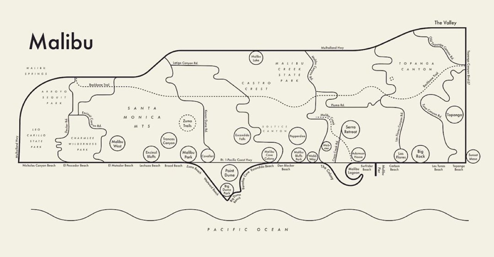

Encaustic painting employs heated beeswax combined with pigment to create paintings of extraordinary textural complexity and dimensional quality. This ancient technique, revived and transformed by contemporary artists, permits creation of layered, sculptural painted surfaces impossible with traditional media. Encaustic requires sophisticated technical knowledge regarding wax temperature control, substrate preparation, and safety procedures. Contemporary encaustic artists have expanded the medium to encompass mixed media approaches and large-scale installation work, establishing encaustic as legitimate contemporary art medium capable of achieving remarkable visual and conceptual results.
Travel Around the World Through Archie Archambault’s Maps

Previous articleHari & Deepti Turn Paper and Light Into Magical Landscapes
Next articlePoppy Almond’s Illustrations Will Cheer You Up